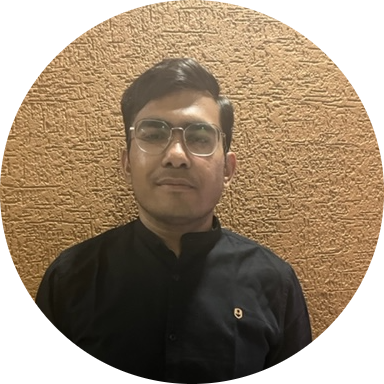

<!DOCTYPE html>
<html lang="en">
  <head>
    <meta charset="UTF-8" />
    <meta name="viewport" content="width=device-width, initial-scale=1.0" />
    <title>Nirav 's Resume</title>
  </head>
  <body>
    <h1>Nirav Sathwara</h1>
    
    <h2>Summary</h2>
    <p>
      ⭐A Quality Control ,continuous improvement and operational excellence
      engineer with more than five years of experience, specializing in PDCA
      ,SRM(supplier relationship management), 5s , Kaizen ,5 whys, Eisenhower
      chart(Time management) and having certified 7qc tools, Lean Management and
      lean six sigma white belt expertise and put into practice new QC
      guidelines and principles that reduced inspection time. aiming to use my
      skills in professional quality control inspection to advance to the
      position of QC supervisor at a reputable company.⭐
    </p>
    <hr />
    <h3>Education</h3>
    <p>👉B.E. Mechanical-Government Engineering College,Modasa(2015 - 2018)</p>
    <p>👉Diploma Mechanical-L.J Polytechnic,Ahmedabad (2012 - 2015)</p>
    <hr />
    <h2>Work Experience</h2>
    <h3>
      Senior Quality Control ,continues improvement and operational excellence
      engineer- RABATEX INDUSTRIES
    </h3>
    <p>04/2021 - PRESENT</p>
    <ul>
      <li>
        Perform Pre-Production Inspection, During Production Inspection, and
        Final Random Inspection of raw materials, casting, packaging, machining,
        auxiliary, sheet metal, fabrication, bending and surface treatment
        process analysis of product quality problems to reduce rework and
        rejection ratios and increase product quality. Support product
        development of new/revised components by providing technical evaluation
        of design modifications as input to cost effect analysis via DCN (Design
        Change Note) and ECN (Engineering Change Note).
      </li>
      <li>
        Constantly analysing data and soliciting feedback from customers to
        discover areas for improvement and improve the overall quality
        management system while keeping strong customer relations. Handling
        Quality Inspection, entering Qc data into Microsoft Dynamic ERP, and
        sending daily MIS of QC activities to management.
      </li>
      <li>
        Create and implement inspection strategies and plans that effectively
        identify product/process flaws and offer solutions using effective
        quality approaches like the DMAIC ,PDCA,7QC tools, the 5 Whys, Kaizen,
        CAPA, A3, and 8D, among others. .
      </li>
      <li>
        Create a checklist for inspection operations and inspections in
        accordance with ISO, ASME, and ANSI standards, design and related
        specifications.
      </li>
      <li>
        Responsible for periodically calibrating inspection instruments,
        upgrading tool quality, and maintaining calibration records and
        certificates.
      </li>
      <li>
        prepare and execute monthly and annual KPIs, ensuring line KPIs are met
        with stated targets, and further analyzing line KPIs to develop
        improvement actions.
      </li>
      <li>
        Support and participate in new product development enhancements by
        becoming involved early in the part development process as per APQP for
        First Time Right development.
      </li>
      <li>
        being familiar with standards such as ISO 9001:2015, ISO 14001 and ISO
        45001.
      </li>
      <li>
        PREPARE AND MAINTAIN ITP (Inspection Test Plan), IMIR (Incoming Material
        Inspection Report), AND NCR's FOR SUPPLIER PERFORMANCE ANALYSIS.
      </li>
      <li>
        Educating, motivating, and maintaining positive relationships with
        external vendors, contractors, in house workshops employees or suppliers
        to ensure that their products or services match the quality requirements
        of the company
      </li>
    </ul>
    <h3>Quality Control Engineer- Aqua machineries pvt. ltd</h3>
    <p>04/2019 - 04/2021</p>
    <ul>
      <li>
        having understanding of the Casting Process, the Machining Process, APT
        (Air Pressure Testing), and HPT (hydro Pressure Testing).
      </li>
      <li>
        After executing quality control inspections on the raw material,
        casting, machining, and ancillary ITEMS, create inspection reports on
        the status and faults of the product.
      </li>
      <li>
        Find supplier-related defects and visit suppliers and internal machine
        shops while including relevant departments to determine the root cause
        analysis and confirm the effectiveness of corrective measures.
      </li>
      <li>
        support to manager in identifying areas for improvement under good
        manufacturing practices.
      </li>
      <li>
        Hold and participate in inter-company quality meetings on a regular
        basis to discuss the scope of improvement, taking into account
        everyone's ideas and suggestions.
      </li>
      <li>
        Provide technical evaluation of design modifications as input to cost
        effect analysis by DCN (Design Change Note) and ECN (Engineering Change
        Note) and support product development of new/revised components.
      </li>
      <li>
        nsure that all inspection-related data, such as vendor and inhouse
        machine shop delivery challans, QC GRNs, and so on, are recorded into
        the ST (ERP)system on a daily basis.
      </li>
      <li>
        Create the overall QC inspection report and submit it to the Department
        Heads.
      </li>
    </ul>
    <h3>Quality Control Engineer- Perry Engineers</h3>
    <p>04/2018 - 04/2019</p>
    <ul>
      <li>
        Perform quality control inspections on machining and casting products
        and generate reports on product condition and defects in accordance with
        QC SOP.
      </li>
      <li>
        On a daily basis, product status is identified using FINISH TAGS - NC,
        REJECTION, ACCEPTED, REWORK WITH NECESSARY COMMENT.
      </li>
      <li>
        Be able to maintain and operate instruments. (Ultrasonic Thickness
        Meter, Vernier, Height Gauge, Micrometer, Right Angles, Digital Coating
        Thickness Gauges, Go and No Go, Depth Vernier, Bevel Protector, and many
        more.)
      </li>
      <li>
        Identify line rejections and record them in the line NC register; move
        identified material to the appropriate area; and dispose of line
        rejections on a daily basis.
      </li>
    </ul>
    <hr />
    <h2>Skills</h2>
    <ul>
      <li>MICROSOFT & STERP-⭐⭐⭐⭐⭐</li>
      <li>
        ARTIFICIAL INTELLIGENCE SUCH AS COPILOT AI WITH MS OFFICE,BARD AI,QUILL
        BOT -⭐⭐⭐⭐
      </li>
      <li>MEASURING INSTRUMENTS -⭐⭐⭐⭐⭐</li>
      <li>MICROSOFT EXCEL,POWERPOI NT,WORD,OUTLO OK,TEAM ETC-⭐⭐⭐⭐⭐</li>
      <li>EISHENHOWERPRODUCTIVITY CHART-⭐⭐⭐⭐⭐</li>
      <li>5S ,KAIZEN 7 QC TOOLS PDCA,DMAIC,8D,A 3,CAPA,5 WHYS-⭐⭐⭐⭐</li>
      <li>GD & T-⭐⭐⭐⭐⭐</li>
      <li>SOLID WORKS-⭐⭐⭐⭐</li>
      <li>AUTO CAD-⭐⭐⭐</li>
    </ul>
    <hr />
    <h2>Awards and Certificate</h2>
    <ul>
      <li>Awarded with key performer of the year of 2021-2022.</li>
      <li>Awarded with key performer of the year of 2022-2023.</li>
    </ul>
    <hr />
    <h2>Others</h2>
    <ul>
      <li><a href="./hobbies.html">My hobbies</a></li>
      <li><a href="./contacts.html">Contact Me</a></li>
    </ul>

    <footer>@ Nirav Sathwara.All rights reserved</footer>
  </body>
</html>
